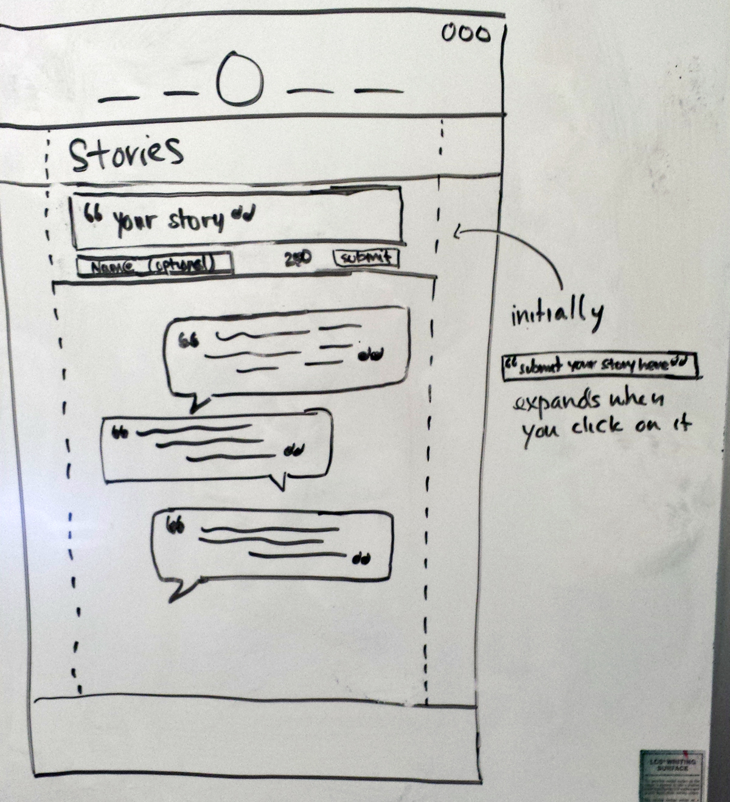
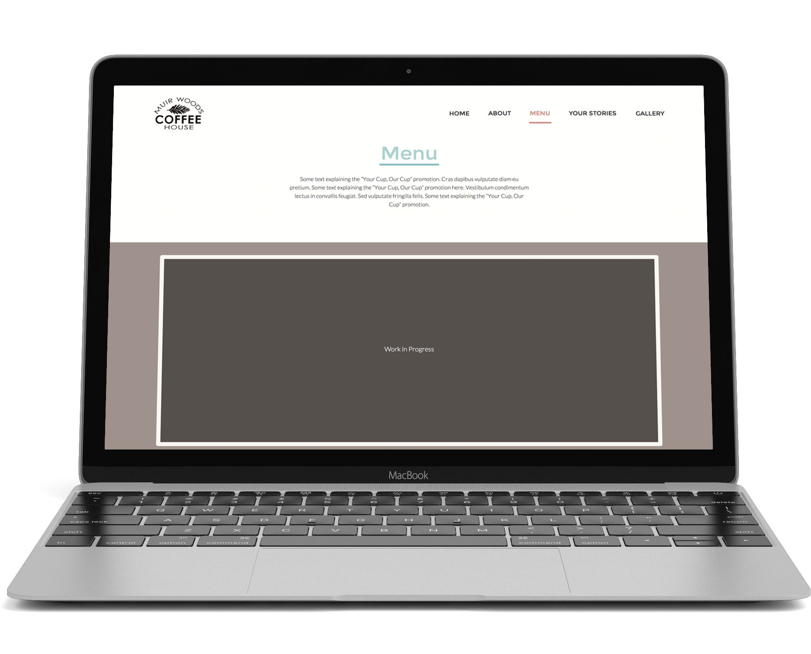
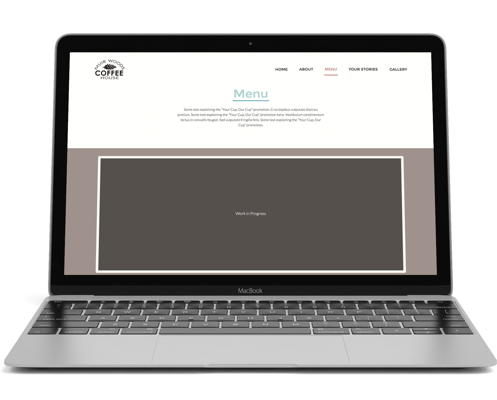

Muir Woods Coffee House
WINTER 2015 | Web Developer & UX Researcher

UC San Diego's on-campus coffee vendor Muir Woods Coffee House was in need of their own website to help promote themselves to both students and non-students. Their current mode of promotion was only by word of mouth and through an extension website from UCSD. So in a team of 3, we worked closely with our client, the Director of Muir Woods Coffee House, in order to create a website that met his needs.
Type: Web Development, Graphic Design, Web Design, Branding
My Core Responsibilities
- Aided in user/client interviews, creating user personae, and competitive analysis
- Executed a majority of the front-end coding via HTML/SCSS
- Creating the graphics for the menu page
- Took and edited all the photos on the website (with the exception of the Muristas photos)
- Tools Used: Adobe Photoshop CS5, Axure, HTML/CSS, SASS, Javascript
User Research
We interviewed the Director of Muir Woods Coffee House to find out what his needs were for the website. We also interviewed around ~20 users to find out what they wanted to see out of a coffee website that would make them want to go visit in person.
| Client Needs | User Needs |
|---|---|
|
|
Competitive Analysis
After speaking with our client, I conducted research on 5 other coffee shop websites, a few of which our client considered competitors with good websites. We drew inspiration from these websites and took the best quality from each.
Whiteboard Wireframes

Prototypes

 


 Learnings Recap
Learnings Recap
After working with a real client, it was interesting to see how different client needs are from the target user’s needs. It was difficult to decide whether we should listen to the client because they’d be the one paying for our services or listen to the end users since they’ll be the ones using and determining the success of the product. But as I worked through the project, I learned how to better prioritize these needs and made many comprimises with our client in order to make way for what the users wanted to see to have a balance.
In the end, the client really wanted to use the website we made for him, but it wasn't possible for him to switch from the provided UCSD domain they were already using. Although we weren't able to launch our website, it was a great learning experience that I'll take with me throughout my career.